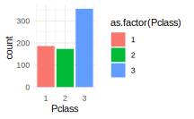
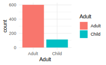

Kapitel 5 Bearbejdning - tidyverse dag 1

“Du kan have data uden information, men du kan ikke have information uden data.” – Daniel Keys Moran
5.1 Idéen med tidyverse
Tidyverse er en samling af pakker i R, som man bruger til at bearbejde datasæt. Formålet er ikke nødvendigvis at erstatte funktionaliteten af base-pakken, men at bygge videre på den. Vi kommer til at se i detaljer, at tidyverse faktisk deler mange af de samme principper som ggplot2 - men i stedet for at bruge + til at opbygge komponenter i et plot, bruger man %>% (udtales ‘pipe’) til at kæde forskellige funktioner sammen.

Læringsmål og checklist
I skal være i stand til at:
- Beskrive generelt, hvad R-pakken
tidyversekan bruges til. - Beskrive en tibble og genkende når et datasæt er betragtet som “tidy”.
- Bruge nogle vigtige
tidyverse-funktioner til at bearbejde data (filter(),select(),mutate(),rename(),arrange(),recode()). - Bruge
%>%pipen til at forbindetidyverse-funktioner sammen og at overføre data til et plot.
Checklist til Kapitel 5: bearbejdning med tidyverse (dag 1)
- Læs “Principper for tidy data” og “Lidt om tibbles”
- Se videoerne
- Kig igennem kursusnotaterne
- Lav “Quiz tidyverse dag 1”
- Gå igennem problemstillingerne
5.2 Video ressourcer
__Start med at læse “Principper for ‘tidy data’” og “Lidt om tibbles” nedenfor og derefter se følgende videoer.
Video 1: Rydde op i datasættet
titanicmedselect()ogdrop_na()
- Video 2:
tidyversefunktioner:selectogfilter
- Video 3: Flere
tidyversefunktioner:- Lave en ny kolon med
mutate() - Ændre variabelnavne med
rename() - Ændre på værdierne med
recode() - Ændre rækkefølgen af observationerne med
arrange() - Bruge tidyverse kommandoer som input i
ggplot2()
- Lave en ny kolon med
5.3 Oversigt over pakker
Lad os starte med at indlæse pakken tidyverse. Vær opmærksom på, at hvis du ikke allerede har pakken på din computer, kan det tage lidt tid at installere fordi tidyverse er afhængig af mange andre pakker, som også skal installeres eller opdateres. Hvis du allerede har pakken installeret, men oplever problemer, skal du tjekke, om du har det seneste version af pakkerne og R på dit system.
Du kan se, at ‘tidyverse’ er ikke kun én, men otte pakker som blev læst ind i R. Det er muligt at indlæse hver pakke individuelt ved at bruge fx library(dplyr), men det er meget bekvemt at indlæse dem alle på én gang ved at bruge library(tidyverse). Her er en kort beskrivelse af hver pakke:
| Pakke | Kort beskrivelse |
|---|---|
readr |
Indlæsning af data |
ggplot2 |
Plotning af data |
tibble |
Oprettelse af “tibbles” - tidyverse’s svar på datarammer (data.frame). |
tidyr |
Transformation af data til forskellige formater (fx fra ‘long’ til ‘wide’ format eller omvendt) |
purrr |
Functional programming |
dplyr |
Manipulation af tibbles - valg af delmængder, oprettelse af nye variabler, beregning af oversigtsstatistikker osv. |
stringr |
Manipulation af tegnstrenge (ikke del af kurset) |
forcats |
Håndtering af faktorvariabler (også kaldet “categories”) |
5.4 Principper af ‘tidy’ data
Idéen bag tidyverse er, at hvis alle datasæt følger præcis den samme struktur, så er det enkelt at bearbejde dem præcis på den samme strukturerede måde med de samme funktioner. Et datasæt med denne struktur kaldes “tidy data”. For at betragte et datasæt som “tidy” skal det opfylde tre kriterier:
- Hver variabel i datasættet har sin egen kolonne
- Hver observation i datasættet har sin egen række
- Hver værdi i datasættet har sin egen celle
Et godt eksempel på et datasæt i tidy format er Iris-datasættet:
#> Sepal.Length Sepal.Width Petal.Length Petal.Width Species
#> 1 5.1 3.5 1.4 0.2 setosa
#> 2 4.9 3.0 1.4 0.2 setosa
#> 3 4.7 3.2 1.3 0.2 setosa
#> 4 4.6 3.1 1.5 0.2 setosa
#> 5 5.0 3.6 1.4 0.2 setosa
#> 6 5.4 3.9 1.7 0.4 setosaI datasættet har hver variabel (Sepal.Length, Sepal.Width, Petal.Length, Petal.Width og Species) sin egen kolonne, og hver observation (f.eks. observation 1, 2, 3, osv.) har sin egen række. Derudover har hver celle sin egen værdi, hvilket gør datasættet meget læsbart og let at forstå bare ved at se på det.

Det er tilfældet, at de fleste datasæt i dette kursus hører til kategorien “tidy data”, især i disse notater, hvor vi bruger en del af de indbyggede datasæt. Nogle gange er det dog nødvendigt at transformere et datasæt til “tidy data”. R-pakkerne dplyr og tidyr er velegnede til at hjælpe med at transformere et datasæt til “tidy data”. Derefter kan man analysere datasættet på den sædvanlige måde. Bemærk dog, at bare fordi et datasæt er “tidy”, betyder det ikke nødvendigvis, at det er klar til analysen. Der kan stadig være behov for yderligere bearbejdning med pakkerne dplyr og tidyr - f.eks. for at fjerne NA værdier.
5.5 Lidt om tibbles
En tibble er tidyverse’s objekttype til at gemme informationer i tabelform og ligner data.frame objektet fra base-R. Forskellene mellem disse er ikke synlige i praksis. Men der er nogle opdaterede aspekter i en tibble. For eksempel bruger en tibble ikke row.names, og når man visualiserer en tibble i R Markdown, får man lidt ekstra oplysninger såsom dimensioner og datatyper. Det er vigtigt at bemærke, at de fleste tidyverse-funktioner fungerer lige så godt, uanset om man bruger en tibble eller en data.frame. Herfra, anvender vi i vores tekster ordet “dataframe” for base R data.frame og for tibble objekter.
Man kan oprette sin egen tibble på samme måde som en data.frame.
#> # A tibble: 3 × 2
#> x y
#> <int> <chr>
#> 1 1 a
#> 2 2 b
#> 3 3 cMan kan også oprette en tribble, som er den samme som en tibble, men har en lidt anderledes måde at indsætte data på. For eksempel svarer følgende til den tidligere tibble:
#> # A tibble: 3 × 2
#> x y
#> <dbl> <chr>
#> 1 1 a
#> 2 2 b
#> 3 3 cMan kan omdanne en data.frame til en tibble ved at bruge funktionen as_tibble(), som vist nedenfor:
#> # A tibble: 150 × 5
#> Sepal.Length Sepal.Width Petal.Length Petal.Width Species
#> <dbl> <dbl> <dbl> <dbl> <fct>
#> 1 5.1 3.5 1.4 0.2 setosa
#> 2 4.9 3 1.4 0.2 setosa
#> 3 4.7 3.2 1.3 0.2 setosa
#> 4 4.6 3.1 1.5 0.2 setosa
#> 5 5 3.6 1.4 0.2 setosa
#> 6 5.4 3.9 1.7 0.4 setosa
#> 7 4.6 3.4 1.4 0.3 setosa
#> 8 5 3.4 1.5 0.2 setosa
#> 9 4.4 2.9 1.4 0.2 setosa
#> 10 4.9 3.1 1.5 0.1 setosa
#> # ℹ 140 more rows5.6 Transition fra base-R til tidyverse
Vi introducerer tidyverse med et meget berømt datasæt kaldet Titanic. Det er ikke biologisk data, men det er stadig ret interessant og sjovt at arbejde med.
Titanic-datasættet er blevet brugt som en del af en åben konkurrence på Kaggle, hvor mindst 31.000 personer hidtil har arbejdet på at lave den bedste model til at forudsige, hvem der overlever katastrofen. Du kan læse mere om baggrunden for datasættet og konkurrencen på dette link: https://www.kaggle.com/c/titanic.
5.6.1 Om Titanic datasættet
Man kan downloade datasættet, der hedder titanic_train, direkte fra Kaggle. Men der er faktisk en R-pakke kaldet titanic, som gør det mere bekvemt og tilgængeligt:
Her er beskrivelsen for pakken:
titanic is an R package containing data sets providing information on the fate of passengers on the fatal maiden voyage of the ocean liner “Titanic”, summarized according to economic status (class), sex, age and survival. These data sets are often used as an introduction to machine learning on Kaggle.
Vi vil gerne bruge titanic_train-datasættet, fordi det er det datasæt, der bliver brugt på Kaggle til at træne maskinlæringsmodeller (som derefter bliver testet på titanic_test-datasættet for at evaluere, hvor god modellen er). For at gøre analyserne nemmere, omdøber vi titanic_train til titanic og bruger funktionen glimpse() fra dplyr-pakken til at se på datasættet.
#> Rows: 891
#> Columns: 12
#> $ PassengerId <int> 1, 2, 3, 4, 5, 6, 7, 8, 9, 10, 11, 12, 13, 14, 15, 16, 17,…
#> $ Survived <int> 0, 1, 1, 1, 0, 0, 0, 0, 1, 1, 1, 1, 0, 0, 0, 1, 0, 1, 0, 1…
#> $ Pclass <int> 3, 1, 3, 1, 3, 3, 1, 3, 3, 2, 3, 1, 3, 3, 3, 2, 3, 2, 3, 3…
#> $ Name <chr> "Braund, Mr. Owen Harris", "Cumings, Mrs. John Bradley (Fl…
#> $ Sex <chr> "male", "female", "female", "female", "male", "male", "mal…
#> $ Age <dbl> 22, 38, 26, 35, 35, NA, 54, 2, 27, 14, 4, 58, 20, 39, 14, …
#> $ SibSp <int> 1, 1, 0, 1, 0, 0, 0, 3, 0, 1, 1, 0, 0, 1, 0, 0, 4, 0, 1, 0…
#> $ Parch <int> 0, 0, 0, 0, 0, 0, 0, 1, 2, 0, 1, 0, 0, 5, 0, 0, 1, 0, 0, 0…
#> $ Ticket <chr> "A/5 21171", "PC 17599", "STON/O2. 3101282", "113803", "37…
#> $ Fare <dbl> 7.2500, 71.2833, 7.9250, 53.1000, 8.0500, 8.4583, 51.8625,…
#> $ Cabin <chr> "", "C85", "", "C123", "", "", "E46", "", "", "", "G6", "C…
#> $ Embarked <chr> "S", "C", "S", "S", "S", "Q", "S", "S", "S", "C", "S", "S"…Vi har også kopieret forklaringer på alle variablerne her:
- PassengerId: unique index for each passenger
- Survived: Whether or not the passenger survived. 0 = No, 1 = Yes.
- Pclass: Ticket class: 1 = 1st Class, 2 = 2nd Class, 3 = 3rd Class.
- Name: A character string containing the name of each passenger.
- Sex: Character strings for passenger sex (“male”/ “female”).
- Age: Age in years.
- SibSp: The number of siblings/spouses aboard the titanic with the passenger
- Parch: The number of parents/children aboard the titanic with the passenger
- Ticket: Another character string containing the ticket ID of the passenger.
- Fare: The price paid for tickets in pounds Sterling (Keep in mind that unskilled workers made around 1 pound a week - these were expensive tickets!)
- Cabin: The cabin number of the passengers (character).
- Embarked: Where passengers boarded the titanic. (C = Cherbourg, Q = Queenstown, S = Southampton).
5.6.2 Titanic: Rengøring
Før vi kan fortsætte med analysen, er der nogle oprydninger, der skal foretages i datasættet. Vi kan se fra glimpse(titanic)-kommandoen, at der er 891 observationer. De fleste passagerer (687) har faktisk ingen oplysninger i variablen Cabin:
#> [1] 687Andre passagerer har mere end én cabin. Det ser ikke særlig tidy ud, og det er heller ikke særlig relevant for analysen, så vi vælger at fjerne hele kolonnen med funktionen select():
select() er en af de grundlæggende funktioner i tidyverse. Her angiver vi, hvilke kolonner vi ønsker at beholde eller fjerne fra datasættet. I dette tilfælde har vi specificeret -Cabin, hvilket betyder at vi ønsker at fjerne variablen Cabin mens vi beholder resten af kolonnerne. Prøv selv at køre select(titanic, Cabin) i stedet - kun variablen Cabin er tilbage, mens resten af variablerne er fjernet.
#> Rows: 891
#> Columns: 11
#> $ PassengerId <int> 1, 2, 3, 4, 5, 6, 7, 8, 9, 10, 11, 12, 13, 14, 15, 16, 17,…
#> $ Survived <int> 0, 1, 1, 1, 0, 0, 0, 0, 1, 1, 1, 1, 0, 0, 0, 1, 0, 1, 0, 1…
#> $ Pclass <int> 3, 1, 3, 1, 3, 3, 1, 3, 3, 2, 3, 1, 3, 3, 3, 2, 3, 2, 3, 3…
#> $ Name <chr> "Braund, Mr. Owen Harris", "Cumings, Mrs. John Bradley (Fl…
#> $ Sex <chr> "male", "female", "female", "female", "male", "male", "mal…
#> $ Age <dbl> 22, 38, 26, 35, 35, NA, 54, 2, 27, 14, 4, 58, 20, 39, 14, …
#> $ SibSp <int> 1, 1, 0, 1, 0, 0, 0, 3, 0, 1, 1, 0, 0, 1, 0, 0, 4, 0, 1, 0…
#> $ Parch <int> 0, 0, 0, 0, 0, 0, 0, 1, 2, 0, 1, 0, 0, 5, 0, 0, 1, 0, 0, 0…
#> $ Ticket <chr> "A/5 21171", "PC 17599", "STON/O2. 3101282", "113803", "37…
#> $ Fare <dbl> 7.2500, 71.2833, 7.9250, 53.1000, 8.0500, 8.4583, 51.8625,…
#> $ Embarked <chr> "S", "C", "S", "S", "S", "Q", "S", "S", "S", "C", "S", "S"…Det næste skridt er at undersøge om der er manglende værdier i datasættet - “not available” eller kort NA. Som det fremgår af følgende kode, har de fleste variabler ingen NA-værdier mens variablen Age har 177.
#> PassengerId Survived Pclass Name Sex Age
#> 0 0 0 0 0 177
#> SibSp Parch Ticket Fare Embarked
#> 0 0 0 0 0Her vælger vi at fjerne alle passagerer med manglende aldersoplysninger (NA) i stedet for at estimere eller imputere deres alder. Til dette formål bruger vi funktionen drop_na, som fjerner alle observationer/rækker som bærer NA i mindst én variabel<<.
#> PassengerId Survived Pclass Name Sex Age
#> 0 0 0 0 0 0
#> SibSp Parch Ticket Fare Embarked
#> 0 0 0 0 0Nu kan vi tjekke, hvor mange observationer og variabler der er tilbage.
#> Rows: 714
#> Columns: 11
#> $ PassengerId <int> 1, 2, 3, 4, 5, 7, 8, 9, 10, 11, 12, 13, 14, 15, 16, 17, 19…
#> $ Survived <int> 0, 1, 1, 1, 0, 0, 0, 1, 1, 1, 1, 0, 0, 0, 1, 0, 0, 0, 1, 1…
#> $ Pclass <int> 3, 1, 3, 1, 3, 1, 3, 3, 2, 3, 1, 3, 3, 3, 2, 3, 3, 2, 2, 3…
#> $ Name <chr> "Braund, Mr. Owen Harris", "Cumings, Mrs. John Bradley (Fl…
#> $ Sex <chr> "male", "female", "female", "female", "male", "male", "mal…
#> $ Age <dbl> 22, 38, 26, 35, 35, 54, 2, 27, 14, 4, 58, 20, 39, 14, 55, …
#> $ SibSp <int> 1, 1, 0, 1, 0, 0, 3, 0, 1, 1, 0, 0, 1, 0, 0, 4, 1, 0, 0, 0…
#> $ Parch <int> 0, 0, 0, 0, 0, 0, 1, 2, 0, 1, 0, 0, 5, 0, 0, 1, 0, 0, 0, 0…
#> $ Ticket <chr> "A/5 21171", "PC 17599", "STON/O2. 3101282", "113803", "37…
#> $ Fare <dbl> 7.2500, 71.2833, 7.9250, 53.1000, 8.0500, 51.8625, 21.0750…
#> $ Embarked <chr> "S", "C", "S", "S", "S", "S", "S", "S", "C", "S", "S", "S"…Vi har beholdt 714 observationer og 11 variabler, og datasættet opfylder kravene for at være tidy.
5.6.3 Pipe
Man kan faktisk opnå det samme som i ovenstående eksempel ved at bruge pipen %>%:
titanic_clean <- titanic %>% # vi tager titanic-datasættet
select(-Cabin) %>% # udvælger de ønskede kolonner
drop_na() # fjerner alle observationer med manglende værdierMan bruger pipen %>% til at kombinere forskellge tidyverse-funktioner i samme kommando. Linjen slutter med %>%, som fortæller, at vi skal bruge resultatet fra den foregående linje som input i den næste linje. Logikken er således, at vi starter med en dataframe, gør én ting ad gangen og slutter med en ny dataframe (som vi kan gemme med <-).
Bemærk at denne proces ligner den man bruger i ggplot2, men forskellen er at man bruger %>% i stedet for +. Bemærk også, at vi skriver koden over flere linjer som i ggplot2. Det er ikke et krav, men det gør det nemmere at læse og forstå koden.
For at illustrere logikken kan man se, at følgende to linjer er tilsvarende:
I begge tilfælde starter vi med x og anvender derefter funktionen f på x. En stor fordel ved tidyverse-tilgangen er, at 1) man undgår at bruge mange parenteser når man har flere funktioner, og at 2) funktionernes rækkefølge læses fra venstre til højre i stedet for omvendt, som i følgende eksempel:
#tag x, anvend f, så g og til sidst h
h(g(f(x))) #traditionelt tilgang
x %>% f %>% g %>% h #tidyverse tilgangPå samme måde som i vores oprydning af titanic kan man både inkludere funktionen select() i drop_na() eller bruge tidyverse-tilgangen - begge eksempler giver samme resultat: Først fjerner vi kolonnen Cabin ved hjælp af select(), og derefter fjerner vi alle rækker, som har mindst én NA ved hjælp af drop_na().
5.7 Bearbejdning af data: dplyr
Pakken dplyr er nok den mest anvendte pakke til at bearbejde dataframes. Vi gennemgår nogle af de mest almindelige muligheder med pakken, og der findes også et “cheatsheet” som du kan downloade som reference: https://github.com/rstudio/cheatsheets/raw/master/data-transformation.pdf. Vi starter med følgende funktioner og dækker flere igennem de forskellige øvelser og øvrige emner:
| dplyr verbs | beskrivelse |
|---|---|
select() |
udvælge kolonner (variabler) |
filter() |
udvælge rækker (observationer) |
arrange() |
sortere rækker |
mutate() |
tilføje eller ændre eksisterende kolonner |
rename() |
ændre variablers navne |
recode() |
ændre selve data |
group_by() |
dele datasættet op efter en variabel |
summarise() |
aggregere rækker, findes ofte tilknyttet til group_by() |
Bemærk, at alle disse funktioner tager udgangspunkt i en dataframe, og man får altid en ny dataframe som output. Ved at kunne bruge disse funktioner og kombinere dem (ved hjælp af %>%) kan man nemt bearbejde næsten alle dataframes.
5.7.1 dplyr verbs: select()
Som vi lige har set ovenfor, udvælger man med select() bestemte variabler i en dataframe. Vi kan vælge at beholde, fjerne eller ændre rækkefølgen af variablerne. Som et eksempel kan vi beholde kun variablerne Name og Age i titanic_clean-dataframen ved at bruge følgende kode:
#> Rows: 714
#> Columns: 2
#> $ Name <chr> "Braund, Mr. Owen Harris", "Cumings, Mrs. John Bradley (Florence …
#> $ Age <dbl> 22, 38, 26, 35, 35, 54, 2, 27, 14, 4, 58, 20, 39, 14, 55, 2, 31, …Hvis vi ønsker at fjerne en variabel fra en dataframe, kan vi bruge et minustegn. I nedenstående eksempel fjerner vi Name og Age fra titanic_clean-dataframen:
#> Rows: 714
#> Columns: 9
#> $ PassengerId <int> 1, 2, 3, 4, 5, 7, 8, 9, 10, 11, 12, 13, 14, 15, 16, 17, 19…
#> $ Survived <int> 0, 1, 1, 1, 0, 0, 0, 1, 1, 1, 1, 0, 0, 0, 1, 0, 0, 0, 1, 1…
#> $ Pclass <int> 3, 1, 3, 1, 3, 1, 3, 3, 2, 3, 1, 3, 3, 3, 2, 3, 3, 2, 2, 3…
#> $ Sex <chr> "male", "female", "female", "female", "male", "male", "mal…
#> $ SibSp <int> 1, 1, 0, 1, 0, 0, 3, 0, 1, 1, 0, 0, 1, 0, 0, 4, 1, 0, 0, 0…
#> $ Parch <int> 0, 0, 0, 0, 0, 0, 1, 2, 0, 1, 0, 0, 5, 0, 0, 1, 0, 0, 0, 0…
#> $ Ticket <chr> "A/5 21171", "PC 17599", "STON/O2. 3101282", "113803", "37…
#> $ Fare <dbl> 7.2500, 71.2833, 7.9250, 53.1000, 8.0500, 51.8625, 21.0750…
#> $ Embarked <chr> "S", "C", "S", "S", "S", "S", "S", "S", "C", "S", "S", "S"…5.7.1.1 Hjælper funktioner til select()
Hjælpefunktioner til funktionen select() kan være nyttige, hvis man vil udvælge bestemte variabler efter visse kriterier. Nedenfor har jeg samlet nogle (men ikke alle!) hjælpefunktioner og inddrager eksempler med dem i problemstillingerne.
| select hjælpefunktion | beskrivelse |
|---|---|
starts_with() |
starter med et særlig præfiks |
ends_with() |
slutter med et særlig suffiks |
contains() |
indeholder en defineret tekststreng |
matches() |
matcher et regulært udtryk |
num_range() |
et numerisk interval såsom x01, x02, x03 |
one_of() |
variabler i en karaktervektor |
everything() |
alle variabler |
where() |
tager en funktion og returnerer alle variabler, hvor funktionen returnerer TRUE |
For eksempel:
#> # A tibble: 714 × 3
#> PassengerId Pclass Parch
#> <int> <int> <int>
#> 1 1 3 0
#> 2 2 1 0
#> 3 3 3 0
#> 4 4 1 0
#> 5 5 3 0
#> 6 7 1 0
#> 7 8 3 1
#> 8 9 3 2
#> 9 10 2 0
#> 10 11 3 1
#> # ℹ 704 more rowsSpecielt brugbar i statistiske metoder, der kræver kun numeriske variabler, er where(), når den kombineres med is.numeric. For eksempel, i følgende kode udvælger man kun numeriske variabler fra datasættet titanic_clean:
#> # A tibble: 714 × 7
#> PassengerId Survived Pclass Age SibSp Parch Fare
#> <int> <int> <int> <dbl> <int> <int> <dbl>
#> 1 1 0 3 22 1 0 7.25
#> 2 2 1 1 38 1 0 71.3
#> 3 3 1 3 26 0 0 7.92
#> 4 4 1 1 35 1 0 53.1
#> 5 5 0 3 35 0 0 8.05
#> 6 7 0 1 54 0 0 51.9
#> 7 8 0 3 2 3 1 21.1
#> 8 9 1 3 27 0 2 11.1
#> 9 10 1 2 14 1 0 30.1
#> 10 11 1 3 4 1 1 16.7
#> # ℹ 704 more rows5.7.2 dplyr verbs: filter()
Med funktionen select() udvælger man bestemte variabler gemt i kolonner. Til gengæld anvender man funktionen filter() til at udvælge bestemte observationer fordelt på rækker i en dataframe. I nedenstående eksempel beholder vi kun rækkerne, hvor variablen Age er 50. Bemærk, at vi bevarer alle andre variabler i dataframe.
#> Rows: 10
#> Columns: 11
#> $ PassengerId <int> 178, 260, 300, 435, 459, 483, 527, 545, 661, 724
#> $ Survived <int> 0, 1, 1, 0, 1, 0, 1, 0, 1, 0
#> $ Pclass <int> 1, 2, 1, 1, 2, 3, 2, 1, 1, 2
#> $ Name <chr> "Isham, Miss. Ann Elizabeth", "Parrish, Mrs. (Lutie Davis)…
#> $ Sex <chr> "female", "female", "female", "male", "female", "male", "f…
#> $ Age <dbl> 50, 50, 50, 50, 50, 50, 50, 50, 50, 50
#> $ SibSp <int> 0, 0, 0, 1, 0, 0, 0, 1, 2, 0
#> $ Parch <int> 0, 1, 1, 0, 0, 0, 0, 0, 0, 0
#> $ Ticket <chr> "PC 17595", "230433", "PC 17558", "13507", "F.C.C. 13531",…
#> $ Fare <dbl> 28.7125, 26.0000, 247.5208, 55.9000, 10.5000, 8.0500, 10.5…
#> $ Embarked <chr> "C", "S", "C", "S", "S", "S", "S", "C", "S", "S"Man kan også vælge intervallet af en variabel - for eksempel hvis man vil vælge alle, der er i halvtredserne.
#> # A tibble: 6 × 11
#> PassengerId Survived Pclass Name Sex Age SibSp Parch Ticket Fare
#> <int> <int> <int> <chr> <chr> <dbl> <int> <int> <chr> <dbl>
#> 1 7 0 1 "McCarthy, M… male 54 0 0 17463 51.9
#> 2 12 1 1 "Bonnell, Mi… fema… 58 0 0 113783 26.6
#> 3 16 1 2 "Hewlett, Mr… fema… 55 0 0 248706 16
#> 4 95 0 3 "Coxon, Mr. … male 59 0 0 364500 7.25
#> 5 125 0 1 "White, Mr. … male 54 0 1 35281 77.3
#> 6 151 0 2 "Bateman, Re… male 51 0 0 S.O.P… 12.5
#> # ℹ 1 more variable: Embarked <chr>Man kan også kombinere betingelser fra forskellige kolonner, for eksempel i nedenstående eksempel vælger vi alle personer, som er kvinder og som rejste i første klasse.
#> # A tibble: 6 × 11
#> PassengerId Survived Pclass Name Sex Age SibSp Parch Ticket Fare
#> <int> <int> <int> <chr> <chr> <dbl> <int> <int> <chr> <dbl>
#> 1 2 1 1 Cumings, Mrs… fema… 38 1 0 PC 17… 71.3
#> 2 4 1 1 Futrelle, Mr… fema… 35 1 0 113803 53.1
#> 3 12 1 1 Bonnell, Mis… fema… 58 0 0 113783 26.6
#> 4 53 1 1 Harper, Mrs.… fema… 49 1 0 PC 17… 76.7
#> 5 62 1 1 Icard, Miss.… fema… 38 0 0 113572 80
#> 6 89 1 1 Fortune, Mis… fema… 23 3 2 19950 263
#> # ℹ 1 more variable: Embarked <chr>Vi kan også kombinere flere betingelser med forskellige symboler. For eksempel i nedenstående eksempel vælger vi personer, som er kvinder og som rejste i enten første eller anden klasse og som er i deres trediverne. Husk at tilføje runde parenteser omkring de to Pclass - prøv selv at fjerne dem og se, hvad der sker.
titanic_clean %>%
filter(Sex == 'female' & (Pclass == 1 | Pclass == 2) & Age %in% c(30:39)) %>%
glimpse()#> Rows: 43
#> Columns: 11
#> $ PassengerId <int> 2, 4, 62, 99, 191, 212, 216, 219, 231, 258, 259, 270, 310,…
#> $ Survived <int> 1, 1, 1, 1, 1, 1, 1, 1, 1, 1, 1, 1, 1, 1, 1, 1, 1, 0, 1, 1…
#> $ Pclass <int> 1, 1, 1, 2, 2, 2, 1, 1, 1, 1, 1, 1, 1, 1, 2, 1, 2, 2, 1, 2…
#> $ Name <chr> "Cumings, Mrs. John Bradley (Florence Briggs Thayer)", "Fu…
#> $ Sex <chr> "female", "female", "female", "female", "female", "female"…
#> $ Age <dbl> 38, 35, 38, 34, 32, 35, 31, 32, 35, 30, 35, 35, 30, 31, 30…
#> $ SibSp <int> 1, 1, 0, 0, 0, 0, 1, 0, 1, 0, 0, 0, 0, 0, 0, 0, 0, 0, 1, 0…
#> $ Parch <int> 0, 0, 0, 1, 0, 0, 0, 0, 0, 0, 0, 0, 0, 2, 0, 0, 0, 0, 0, 0…
#> $ Ticket <chr> "PC 17599", "113803", "113572", "231919", "234604", "F.C.C…
#> $ Fare <dbl> 71.2833, 53.1000, 80.0000, 23.0000, 13.0000, 21.0000, 113.…
#> $ Embarked <chr> "C", "S", "", "S", "S", "S", "C", "C", "S", "S", "C", "S",…5.7.3 Sammenligningsoperatorer
Her er en tabel over sammenligningsoperatorer, som kan bruges i både filter() og i baseR (fordi konceptet er det samme, bare deres brug er anderledes).
| Sammenligningsoperator | Beskrivelse |
|---|---|
< |
mindre end |
> |
større end |
<= |
mindre end eller lige med |
>= |
større end eller lige med |
== |
lige med |
!= |
forskellig fra |
& |
og |
%in% |
inkluderet i |
| |
eller |
5.7.4 Kombinere filter() og select()
Man kan også kombinere filter() og select() i samme kommandon, som i følgende eksempel:
titanic_clean %>%
filter(Sex == 'female' & (Pclass == 1 | Pclass == 2) & Age %in% c(30:39)) %>%
select(Name, Fare) %>%
glimpse()#> Rows: 43
#> Columns: 2
#> $ Name <chr> "Cumings, Mrs. John Bradley (Florence Briggs Thayer)", "Futrelle,…
#> $ Fare <dbl> 71.2833, 53.1000, 80.0000, 23.0000, 13.0000, 21.0000, 113.2750, 7…Bemærk at man skal være opmærksom >>på rækkefølgen af de brugte funktioner<<. Hvis man bytter rundt på filter() og select() i ovenstående eksempel, vil der opstå en advarsel. Prøv selv at køre følgende kode:
##virker ikke!!!!!#####
titanic_clean %>%
select(Name, Fare) %>%
filter(Sex == 'female' & (Pclass == 1 | Pclass == 2) & Age %in% c(30:39)) %>%
glimpse()Grunden til det er: Hvis man først vælger at beholde kun variablerne Name og Age, så er de andre variabler ikke længere tilgængelige i den resulterende dataframe som bruges i funktionen filter(). Derfor kan man ikke bruge funktionen filter() på variablerne Pclass,Sex og Age.
5.7.5 dplyr verbs: mutate()
Man kan bruge funktionen mutate() til at tilføje en ny variabel til en dataframe. I nedenstående eksempel tilføjer jeg en ny variabel med navnet Adult, der angiver om personen kan betragtes som voksen (hvis vedkommende er mindst 18 år gammel).
titanic_with_Adult <- titanic_clean %>%
mutate(Adult = Age>=18)
titanic_with_Adult %>% select(Adult) %>% glimpse()#> Rows: 714
#> Columns: 1
#> $ Adult <lgl> TRUE, TRUE, TRUE, TRUE, TRUE, TRUE, FALSE, TRUE, FALSE, FALSE, T…Så kan man se, at der er 601 voksne og 113 børn som passagerere på skibet.
Bemærk, at vi gemmer resultatet som en ny dataframe, der hedder titanic_with_Adult, og derefter bruger vi glimpse() på det nye objekt titanic_with_Adult for at se, hvordan den nye dataframe ser ud. I forudgående eksempler gemte vi ikke resultatet - vi brugte kun glimpse() for at se resultatet på skærmen. Hvis du gerne vil bruge din resulterende dataframe videre, så skal du huske at gemme den (ved brug af <--tegnet).
funktionen ifelse() indenfor mutate()
Vi kan oprette variablen Adult på en mere informativ måde end bare med TRUE eller FALSE. Vi bruger funktionen ifelse() at få teksten “adult”, hvis Age>=18 er sandt, og hvis ikke, vil vi få teksten “child”:
Funktionen ifelse() bruges inden for mutate()-funktionen, fordi vi er i gang med at oprette en ny variabel - Adult. Funktionen ifelse() giver os mulighed for at fortælle, hvordan den nye variabel skal se ud.
titanic_clean %>%
mutate(Adult = ifelse(Age>=18,"adult","child")) %>%
select(Age,Adult) %>%
glimpse()#> Rows: 714
#> Columns: 2
#> $ Age <dbl> 22, 38, 26, 35, 35, 54, 2, 27, 14, 4, 58, 20, 39, 14, 55, 2, 31,…
#> $ Adult <chr> "adult", "adult", "adult", "adult", "adult", "adult", "child", "…Så er variablen lidt mere informativ end før.
Opret nye variabler baseret på andre variabler
Man kan også oprette nye kolonner baseret på kombinationer af nogle af de eksisterende kolonner. For eksempel, vil vi gerne have en ny kolonne, der viser summen af variablene Fare og Age, en der viser gennemsnittet af de to variabler, og en der hedder “Fare_per_year”. Det vises i følgende eksempel:
titanic_clean %>%
mutate("Fare_Age_sum" = Fare + Age,
"Fare_Age_mean" = Fare_Age_sum / 2,
"Fare_per_year" = Fare / Age) %>%
select(Age, Fare, Fare_Age_sum, Fare_Age_mean, Fare_per_year) %>%
glimpse()#> Rows: 714
#> Columns: 5
#> $ Age <dbl> 22, 38, 26, 35, 35, 54, 2, 27, 14, 4, 58, 20, 39, 14, 55…
#> $ Fare <dbl> 7.2500, 71.2833, 7.9250, 53.1000, 8.0500, 51.8625, 21.07…
#> $ Fare_Age_sum <dbl> 29.2500, 109.2833, 33.9250, 88.1000, 43.0500, 105.8625, …
#> $ Fare_Age_mean <dbl> 14.62500, 54.64165, 16.96250, 44.05000, 21.52500, 52.931…
#> $ Fare_per_year <dbl> 0.3295455, 1.8758763, 0.3048077, 1.5171429, 0.2300000, 0…Det er klart, at fortolkningen af Fare_Age_mean måske ikke er særlig interessant, men der ville være mange situationer, hvor man gerne vil kombinere kolonner for at lave meningsfulde analyser.
5.7.6 rename()
Man kan bruge rename() til at ændre navnet på en eller flere variabler i datasættet. F.eks. bruger vi rename() til at give en variabel navnet Years i stedet for Age (bemærk, at variablen Age ikke findes længere).
#> Rows: 714
#> Columns: 11
#> $ PassengerId <int> 1, 2, 3, 4, 5, 7, 8, 9, 10, 11, 12, 13, 14, 15, 16, 17, 19…
#> $ Survived <int> 0, 1, 1, 1, 0, 0, 0, 1, 1, 1, 1, 0, 0, 0, 1, 0, 0, 0, 1, 1…
#> $ Pclass <int> 3, 1, 3, 1, 3, 1, 3, 3, 2, 3, 1, 3, 3, 3, 2, 3, 3, 2, 2, 3…
#> $ Name <chr> "Braund, Mr. Owen Harris", "Cumings, Mrs. John Bradley (Fl…
#> $ Sex <chr> "male", "female", "female", "female", "male", "male", "mal…
#> $ Years <dbl> 22, 38, 26, 35, 35, 54, 2, 27, 14, 4, 58, 20, 39, 14, 55, …
#> $ SibSp <int> 1, 1, 0, 1, 0, 0, 3, 0, 1, 1, 0, 0, 1, 0, 0, 4, 1, 0, 0, 0…
#> $ Parch <int> 0, 0, 0, 0, 0, 0, 1, 2, 0, 1, 0, 0, 5, 0, 0, 1, 0, 0, 0, 0…
#> $ Ticket <chr> "A/5 21171", "PC 17599", "STON/O2. 3101282", "113803", "37…
#> $ Fare <dbl> 7.2500, 71.2833, 7.9250, 53.1000, 8.0500, 51.8625, 21.0750…
#> $ Embarked <chr> "S", "C", "S", "S", "S", "S", "S", "S", "C", "S", "S", "S"…Man kan også ændre navnene på flere kolonner på én gang. F.eks. i følgende kode oversætter vi fra engelsk til dansk:
titanic_clean_dansk <- titanic_clean %>%
rename(Overlevede = Survived,
Navn = Name,
Klasse = Pclass)Den nye dataframe kaldes titanic_clean_dansk så at vores danske version er blevet gemt.
Hjælpefunktionen tolower() skifter alle bogstaver i variablernes navne til små bogstaver. Vi benytter den danske version og anvender rename_with() i kombination med tolower.
titanic_clean_dansk %>%
rename_with(tolower) %>% # alle variablernes navne er kun små bogstaver
glimpse()#> Rows: 714
#> Columns: 11
#> $ passengerid <int> 1, 2, 3, 4, 5, 7, 8, 9, 10, 11, 12, 13, 14, 15, 16, 17, 19…
#> $ overlevede <int> 0, 1, 1, 1, 0, 0, 0, 1, 1, 1, 1, 0, 0, 0, 1, 0, 0, 0, 1, 1…
#> $ klasse <int> 3, 1, 3, 1, 3, 1, 3, 3, 2, 3, 1, 3, 3, 3, 2, 3, 3, 2, 2, 3…
#> $ navn <chr> "Braund, Mr. Owen Harris", "Cumings, Mrs. John Bradley (Fl…
#> $ sex <chr> "male", "female", "female", "female", "male", "male", "mal…
#> $ age <dbl> 22, 38, 26, 35, 35, 54, 2, 27, 14, 4, 58, 20, 39, 14, 55, …
#> $ sibsp <int> 1, 1, 0, 1, 0, 0, 3, 0, 1, 1, 0, 0, 1, 0, 0, 4, 1, 0, 0, 0…
#> $ parch <int> 0, 0, 0, 0, 0, 0, 1, 2, 0, 1, 0, 0, 5, 0, 0, 1, 0, 0, 0, 0…
#> $ ticket <chr> "A/5 21171", "PC 17599", "STON/O2. 3101282", "113803", "37…
#> $ fare <dbl> 7.2500, 71.2833, 7.9250, 53.1000, 8.0500, 51.8625, 21.0750…
#> $ embarked <chr> "S", "C", "S", "S", "S", "S", "S", "S", "C", "S", "S", "S"…Prøv også at erstatte tolower med toupper.
5.7.7 dplyr verbs: recode()
Med recode() kan man ændre værdier af en særlig variable. F.eks. kan man ændre “male”/“female” til 0/1:
titanic_clean %>%
mutate(Sex = recode(Sex, "male" = 0, "female" = 1)) %>%
select(PassengerId,Name,Sex) %>% glimpse()#> Rows: 714
#> Columns: 3
#> $ PassengerId <int> 1, 2, 3, 4, 5, 7, 8, 9, 10, 11, 12, 13, 14, 15, 16, 17, 19…
#> $ Name <chr> "Braund, Mr. Owen Harris", "Cumings, Mrs. John Bradley (Fl…
#> $ Sex <dbl> 0, 1, 1, 1, 0, 0, 0, 1, 1, 1, 1, 0, 0, 1, 1, 0, 1, 0, 0, 1…Bemærk, at funktionen recode() er blevet brugt indenfor funktionen mutate(). Vi lavede en ny variabel med samme navn, men med ændrede værdier.
Hvis man ønsker at ændre 0/1-værdier tilbage til “male”/“female”, skriver man 1 / 0 for at specificere at man har talværdier, og man ønsker at kalde dem for tekstværdier som f.eks. “male”/“female”:
#recodes variable Sex and then recodes it back to original form again
titanic_clean %>%
mutate(Sex = recode(Sex, male = 1, female = 0)) %>%
mutate(Sex = recode(Sex, `1` = "male", `0` = "female")) %>% #note use of `` in the numbers
select(PassengerId,Name,Sex) %>% glimpse()#> Rows: 714
#> Columns: 3
#> $ PassengerId <int> 1, 2, 3, 4, 5, 7, 8, 9, 10, 11, 12, 13, 14, 15, 16, 17, 19…
#> $ Name <chr> "Braund, Mr. Owen Harris", "Cumings, Mrs. John Bradley (Fl…
#> $ Sex <chr> "male", "female", "female", "female", "male", "male", "mal…Bemærk brugen af `` i tallene.
5.7.8 dplyr verbs: arrange()
Man anvender arrange() for at definere rækkefølgen af observationerne. I nedenstående eksempel tager vi vores dataframe titanic_clean og sorterer observationer efter variablen Fare. Det betyder, at personer, der har betalt mindst, vil være øverst i den resulterende dataframe. Personer, der har betalt mest, vil være nederst.
#> Rows: 714
#> Columns: 11
#> $ PassengerId <int> 180, 264, 272, 303, 598, 807, 823, 379, 873, 327, 844, 819…
#> $ Survived <int> 0, 0, 1, 0, 0, 0, 0, 0, 0, 0, 0, 0, 0, 0, 0, 0, 0, 1, 0, 0…
#> $ Pclass <int> 3, 1, 3, 3, 3, 1, 1, 3, 1, 3, 3, 3, 3, 3, 3, 3, 3, 3, 3, 3…
#> $ Name <chr> "Leonard, Mr. Lionel", "Harrison, Mr. William", "Tornquist…
#> $ Sex <chr> "male", "male", "male", "male", "male", "male", "male", "m…
#> $ Age <dbl> 36.0, 40.0, 25.0, 19.0, 49.0, 39.0, 38.0, 20.0, 33.0, 61.0…
#> $ SibSp <int> 0, 0, 0, 0, 0, 0, 0, 0, 0, 0, 0, 0, 0, 1, 0, 0, 0, 0, 1, 0…
#> $ Parch <int> 0, 0, 0, 0, 0, 0, 0, 0, 0, 0, 0, 0, 0, 0, 0, 0, 0, 0, 0, 0…
#> $ Ticket <chr> "LINE", "112059", "LINE", "LINE", "LINE", "112050", "19972…
#> $ Fare <dbl> 0.0000, 0.0000, 0.0000, 0.0000, 0.0000, 0.0000, 0.0000, 4.…
#> $ Embarked <chr> "S", "S", "S", "S", "S", "S", "S", "C", "S", "S", "C", "S"…Hvis man gerne vil have det omvendt - at personer som har betalt mest, skal være øverst i vores dataframe, kan man bruge desc() omkring Fare:
#> Rows: 714
#> Columns: 11
#> $ PassengerId <int> 259, 680, 738, 28, 89, 342, 439, 312, 743, 119, 300, 381, …
#> $ Survived <int> 1, 1, 1, 0, 1, 1, 0, 1, 1, 0, 1, 1, 1, 1, 0, 1, 1, 1, 1, 1…
#> $ Pclass <int> 1, 1, 1, 1, 1, 1, 1, 1, 1, 1, 1, 1, 1, 1, 1, 1, 1, 1, 1, 1…
#> $ Name <chr> "Ward, Miss. Anna", "Cardeza, Mr. Thomas Drake Martinez", …
#> $ Sex <chr> "female", "male", "male", "male", "female", "female", "mal…
#> $ Age <dbl> 35.00, 36.00, 35.00, 19.00, 23.00, 24.00, 64.00, 18.00, 21…
#> $ SibSp <int> 0, 0, 0, 3, 3, 3, 1, 2, 2, 0, 0, 0, 1, 0, 0, 0, 0, 0, 0, 1…
#> $ Parch <int> 0, 1, 0, 2, 2, 2, 4, 2, 2, 1, 1, 0, 0, 0, 2, 1, 0, 1, 2, 1…
#> $ Ticket <chr> "PC 17755", "PC 17755", "PC 17755", "19950", "19950", "199…
#> $ Fare <dbl> 512.3292, 512.3292, 512.3292, 263.0000, 263.0000, 263.0000…
#> $ Embarked <chr> "C", "C", "C", "S", "S", "S", "S", "C", "C", "C", "C", "C"…5.8 Visualisering: bruge som input i ggplot2
Efter man har udført bearbejdning med tidyverse-kommandoer, kan man specificere den resulterende dataframe som data i funktionen ggplot(). Man bruger %>%-operatoren til at forbinde dplyr-kommandoerne med ggplot-funktionen, og i dette tilfælde behøver man ikke at angive navnet af dataframen inde i ggplot-funktionen - data parameteren er “tom”. I nedenstående eksempel tager vi udgangspunkt i titanic_clean og laver et søjlediagram, som viser antallet af passagerer, der rejste i hver af de tre klasser.
titanic_clean %>%
ggplot(aes(x=Pclass,fill=as.factor(Pclass))) +
geom_bar(stat="count") +
theme_minimal()
Vi gør det lidt mere kompliceret i følgende eksempel, hvor vi tager udgangspunkt i titanic_clean, laver en ny kolonne kaldet Adult ved at bruge mutate(), og derefter bruger vi den resulterende dataframe i ggplot() funktionen til at lave et plot, hvor vi tæller antallet af voksne og børn:
titanic_clean %>%
mutate(Adult = ifelse(Age>=18,"Adult","Child")) %>%
ggplot(aes(x=Adult,fill=Adult)) +
geom_bar(stat="count") +
theme_minimal()
Så kan man se, at der var 600 voksne og lidt over 100 børn ombord på skibet.
5.9 Ekstra funktioner som er nyttige at vide
5.9.1 Pull
I tidyverse arbejder vi meget med dataframes. Tilgangen er, at man tager udgangspunkt i en dataframe, får en dataframe som resultat, og arbejder videre med den. Nogle gange kan det dog være, at man gerne vil udtrække en variabel som en vektor fra en dataframe, f.eks. hvis man gerne vil bruge den i en bestemt statistisk metode.
Her er et eksempel, hvor man udtrækker variablen Age for “male” og “female” (variablen Sex) og bruger de resulterende vektorer i en t-test:
ages_male <- titanic_clean %>% filter(Sex=="male") %>% pull(Age)
ages_female <- titanic_clean %>% filter(Sex=="female") %>% pull(Age)
t.test(ages_male,ages_female)#>
#> Welch Two Sample t-test
#>
#> data: ages_male and ages_female
#> t = 2.5259, df = 560.05, p-value = 0.01181
#> alternative hypothesis: true difference in means is not equal to 0
#> 95 percent confidence interval:
#> 0.6250732 4.9967983
#> sample estimates:
#> mean of x mean of y
#> 30.72664 27.91571Så kan man se, at mænd og kvinder i gennemsnit har signifikant forskellige aldre (hvor mændene er ældre end kvinderne).
5.9.2 Slice
Med funktionen slice kan man vælge specifikke observationer i en dataframe. Følgende eksempel viser de to passagerer, der har betalt mest for deres billet (variablen Fare).
#> # A tibble: 2 × 2
#> Name Age
#> <chr> <dbl>
#> 1 Ward, Miss. Anna 35
#> 2 Cardeza, Mr. Thomas Drake Martinez 36Se udvidet muligheder her: https://dplyr.tidyverse.org/reference/slice.html
5.10 Problemstillinger
Problem 1) Lav quizzen på Absalon - “Quiz - tidyverse dag 1”
Vi øver os med datasættet Titanic. Indlæs datasættet og ryd op med følgende kode:
library(tidyverse)
library(titanic)
titanic <- as_tibble(titanic_train)
titanic_clean <- titanic %>%
select(-Cabin) %>%
drop_na() %>%
mutate(Adult = ifelse(Age>=18,"adult","child")) %>%
mutate(Survived = recode(Survived, `1` = "yes", `0` = "no"))
glimpse(titanic_clean) #take a look!Problem 2) select(). Tag udgangspunkt i titanic_clean og fjern variablen Name (du behøver ikke at gemme din nye dataframe).
- Tilføj også
glimpse()for at se et overblik (man kan også brugehead())
Problem 3) select(). Lav en ny dataframe baseret på titanic_clean med kun variabler Name, Pclass og Fare (du behøver ikke at gemme den).
- Gør det en forskel, i hvilken rækkefølge man skriver
Name,PclassogFare?
Problem 4) select() og hjælperfunktioner. Tag udgangspunkt i titanic_clean. Hvad sker der, når man skriver starts_with("S") i stedet for at specificere bestemte kolonnenavne inden for select()?
Prøv også
contains("ar")Prøv også
-any_of(c("Survived","Pclass","FavouriteColour"))og-all_of(c("Survived","Pclass","FavouriteColour"))- Hvis man bruger
all_of(), så skal alle variabler i vektorenc("Survived","Pclass","FavouriteColour")findes i datasættet, ellers få man en advarsel. - Hvis man bruger
any_of(), så vil alle variabler fra vektorenc("Survived","Pclass","FavouriteColour"), som findes i datasættet, blive inkluderet, mens de andre variabler vil blive ignoreret.
- Hvis man bruger
Prøv også
matches("^S[i|u]")- kan du gætte, hvad det gør?
Problem 5) filter(). Opret en ny dataframe baseret på titanic_clean med alle passagerer, der er mellem 10 og 15 år gammel og har rejst i enten første eller anden klasse (du behøver ikke at gemme den).
- Prøv at tilføje
%>% count()til kommandoen - Hvor mange observationer er der i din nye dataframe?
Problem 6) Kombiner filter() og select() med %>%
Opret en ny dataframe baseret på titanic_clean med alle passagerer, der er “male” og har overlevet (variablen Survived er “yes”), og vælg kun kolonnerne Name, Age og Fare.
Problem 7) Kombiner filter() og select() med %>%
Opret en ny dataframe baseret på titanic_clean med kun variablerne Name og Age og vælge kun de passagerer som er over 60.
- Få du den samme sæt observationer hvis du skriver
select()ogfilter()funktionerne omvendt? Hvorfor?
Problem 8) mutate().
Baseret på titanic_clean, opret en ny kolonne med navn FareRounded og viser Fare rundet til det nærmest integar (hint: brug funktionen round()).
Problem 9) mutate().
- Baseret på
titanic_clean, opret en ny kolonne med navnMean_ID_Ageog viser gennemsnittet af variablenPassengerIdog variablenAge(se sektion Opret nye variabler ud fra andre variabler i kursusnotaterne hvis du er i tvivl). - Opret også en ny kolonne som viser summen af variablerne
SibSpogParch.
Problem 10) Kombiner mutate() med ifelse().
Opret en ny dataframe baseret på titanic_clean med den ny kolonne Family som angiver TRUE hvis Parch er ikke nul, ellers FALSE.
- Anvend funktionen-
ifelse()til at gøre variablen mere intuitiv - “Family” og “Not family”.
Problem 11) Kombiner mutate() med ifelse().
Se igen på beskrivelsen af de følgende to variabler i datasættet:
SibSp: The number of siblings/spouses aboard the titanic with the passenger
Parch: The number of parents/children aboard the titanic with the passenger
- Tag udgangspunkt i
titanic_cleanog lav en ny variabelSolosom viser “Ja”, hvis passageren rejste alene, og “Nej”, hvis passageren rejste med andre. - Brug
mutate()igen til at skifte den nye variabel til en faktor. - Gem også din nye dataframe for at anvende din nye variabel også i det næste spørgsmål.
Problem 12) pull() og t.test()
Betalte passagererne, der rejste alene (variablen Solo fra sidste problemstilling), i gennemsnit det samme for deres billet (variablen Fare) som passagererne, der ikke rejste alene? Lav en t-test (anvend filter() og så pull() to gange til at udtrække passende vektorer og bruger dem i t.test()-funktionen - se også eksempel i kursusnoterne hvis du er usikker).
Problem 13) Recode()
I variablen Embarked står:
* C for Cherbourg
* Q for Queenstown
* S for Southampton
a) Anvend recode (indenfor mutate) til at ændre værdierne i variablen Embarked så at man får de fulde navne af de tre steder folk gik ombord. Gem også dit output (som titanic_clean igen) så du kan bruge din nye variabel videre.
b) Erstat recode-funktionen med recode_factor-funktionen og sammenlign datatypen af variablen Embarked i din nye dataframe.
c) Prøv at tilføje funktionen count() for at optælle hvor mange gik ombord i de forskellige steder.
- Prøv også at
count()baseret på to variabler -SoloogEmbarked
Resultatet ser sådan ud:
#> # A tibble: 7 × 3
#> Solo Embarked n
#> <fct> <fct> <int>
#> 1 No "Southampton" 229
#> 2 No "Queenstown" 9
#> 3 No "Cherbourg" 72
#> 4 Yes "Southampton" 325
#> 5 Yes "Queenstown" 19
#> 6 Yes "Cherbourg" 58
#> 7 Yes "" 2d) Man kan se, at der er to passagerer hvor der ikke er noget skrevet i Embarked.
- Rejste de alene?
- Gem din dataframe efter du har fjernet de to passagerer.
Problem 14) Arrange(). Lav en ny dataframe baseret på titanic_clean med observationerne arrangerede så at de yngste er på toppen og de ældste er i bunden. Kig på resultatet - hvad kan du fortælle om den yngste passager ombord skibet Titanic?
- Hvad kan du fortælle om den ældste passager ombord skibet? Overlevede de? Hvad med andre af de ældste passagerer?
Problem 15) Arrange() og kombinationen med andre verber.
Lav en ny dataframe fra titanic_clean kun med personer der er kendetegnet ved SibSp>0 og som gik ombord skibet i Southampton. Arrangere de resulterende observationer efter Fare (højeste på toppen) og vælg kun kolonnerne Name, Age og Fare.
Problem 16) Rename().
Fra titanic_clean, vælg kun variabler Survived,Ticket, og Name og ændre deres navne til Overlevede, Billet og Navn.
- Skift navne af variabler til store bogstaver ved at anvende
rename_with().
Problem 17) Lave et plot.
Fra titanic_clean, bruge filter() til at lave en ny dataframe kun med personer under 30. Anvende dataframen til at lave et søjlediagram som viser antallet af personer opdelt efter Pclass. Bruge følgende struktur for koden:
Problem 18) Lave et plot.
Fra titanic_clean, bruge mutate() til at lave en nye kolonne med navn with_siblings_spouses der er TRUE hvis SibSp ikke er nul. Brug den til at lave boxplots som viser Fare på y-aksen og with_siblings_spouses på x-aksen.
- Ekstra: Ændre skalen på y-aksen for at gøre plottet klarer at fortolke.
5.11 Kommentarer
matches("^S[i|u]")betyder^Svariabel navn skal starter med en S[i|u]den næste bogstav i navnet af variablen skal være entenielleru
- OBS! Det er ikke vigtigt at lære pattern matching i kurset men det er meget brugbart i andre sammenhænge!
##Næste gange
Vi arbejder videre med tidyverse:
* Kombinationer af group_by() med summarise()
* pivot_longer() / pivot_wider()
* Kombinere funktionerne.